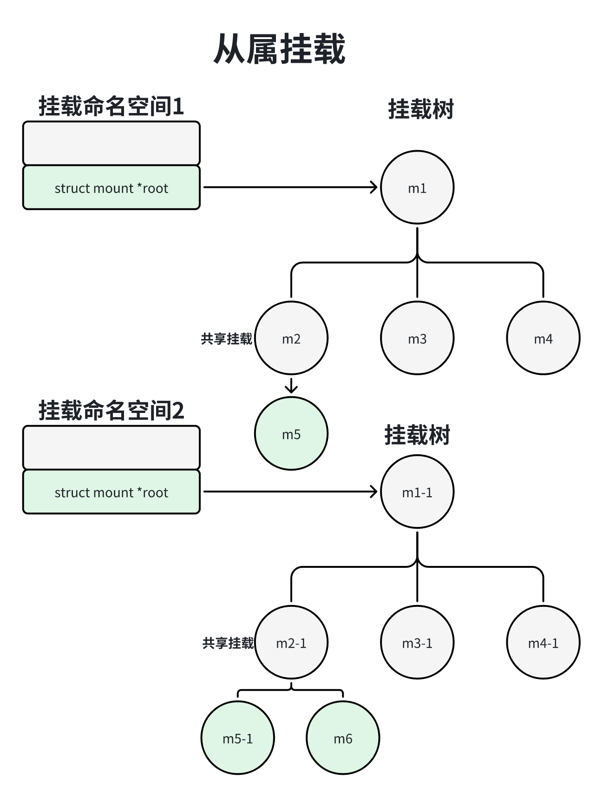

因为每种文件系统的超级块的格式不同，所以每种文件系统需要向虚拟文件系统注册文件系统类型file_system_type，实现mount方法用来读取和解析超级块。
函数register_filesystem用来注册文件类型：
1int register_filesystem(struct file_system_type *fs);函数unregister_filesystem用来注销文件类型：
11int unregister_filesystem(struct file_syetem *fs);管理员可以执行命令”cat /proc/filesystem“来查看已经注册的文件类型。
虚拟文件系统在内存中把目录组织为一棵树。一个文件系统，只有挂载到内存中目录树的一个目录下，进程才能访问这个文件系统。
管理员可以执行命令”mount -t fstylep[-o options] device dir“，把存储设备的device上李兴伟fstype的文件系统挂载到目录dir下。例如：命令”mount -t ext4 /dev/sda1/a“把SATA硬盘a的第一个分区上的EXT4文件系统挂载到怒路”/a“下。
管理员可以执行命令”unmount dir“来卸载目录在dir下挂载的文件系统。
gibc库封装了挂载文件系统的函数mount：
41// dev_name是设备名称， dir_name是目录名称， type是文件类型的名称， 参数flags是挂载标志位2// data 是挂载选项3int mount(const char *dev_name, const char *dir_name, 4 const char *type, unsigned long flags, const void *data);这个函数调用是内核的系统调用mount。
glibc库封装el两个卸载文件的系统函数。
1、函数umount，对应内核的系统调用obldumount。
11int umount(const char *target);2、函数umount2，对应内核系统调用umount。
11int umout2(const chat *target, int falgs);每次挂载文件系统，虚拟文件系统就会创建一个挂载符号：mount结构体。挂载描述符用来描述符文件系统的一个挂载实例，同一个存储设备上的文件系统可以多次挂载，每次挂载到不同的目录下。
假设我们把我们系统2挂载到目录”/a“下，目录a属于文件系统1，挂载描述符的数据结构如下图所示：
为了能够快速找到目录a下挂载的文件系统，把文件系统2的挂载描述符加入全局散列表mount_hashtable，关键字是{父挂载描述符，挂载点}，根据文件系统1的挂载描述符和目录a可以在散列表中找到文件系统2的挂载描述符。
入戏图所示，在文件系统1中，目录a下可能有子目录和文件。在目录a下挂载文件系统2以后，当进程访问目录”/a“的时候，虚拟文件系统发现目录a是挂载点，就会跳转到文件系统2的根目录。所以进程访问目录”/a“，实际上是访问目录a下挂载的文件系统2的根目录，进程看不到文件系统1中的目录a下的子目录和文件。只有从目录a卸载文件系统2以后，进程才能重新看到文件系统1中的目录a下的目录和文件。
假设在文件系统1中，在目录a下挂载文件系统2，在目录b下挂载文件系统2，在目录c下挂载文件系统4。假设文件系统1的挂载描述符是m1，文件系统2的挂载描述符是m2，文件系统3的挂载描述符是m3，文件系统4的挂载是m4，如下图所示，这些挂载描述符组成一棵挂载树。
系统调用mount用来挂载文件系统，其定义如下：
x1// 位置：fs/namespace.c2
3SYSCALL_DEFINE5(mount, char __user *, dev_name, char __user *, dir_name, 4 char __user *, ungined long ,flags, void __user *, data);使用命令”mount -tfstype [-o options] device dir“指向一个标准的挂载操作时，系统调用mount的执行流程如下图所示：
调用函数user_path，根据目录名称找到挂载米OA舒服度记录的内存的dentry实例。
调用函数get_fs_type，根据文件系统类型的名称查找file_system_type实例。
调用函数alloc_vfsmnt分配挂在描述符。
调用文件系统类型的挂载方法，读取并且解析超级块。
把挂载描述符添加到超级块的挂载实例链表中。
把挂载描述中加入散列表。
把挂载描述符加入父亲的孩子链表。
绑定挂载（bind mount）用来把目录树的一颗子树挂载到其他地方。执行绑定挂载的命令如下：
11mount --binf olddir newdir把以目录olddir为根的子树挂载到目录newdir，以后目录newdir和目录oldir可以看到相同的内容。
可以把一个文件绑定到另一个文件，访问这两个文件时看到数据是完全相同，例如：执行命令”mount --bind /a/c.txt/b/d.txt“，把文件”/a/c.txt“绑定挂载到文件”b/d.txt“。
命令”mount --bind olddir newdir“只挂在一个文件系统（目录olddir所属的文件系统）或其中的一个部分。如果需要绑定挂载目录olddir所属的文件系统及其所有子挂在，应该执行下面的命令：
11mount --rbind olddir newdirrbind中的r是递归的recursively。
如果需要再程序中执行绑定挂载，方法是：调用系统调用mmount，把参数flags设置为MS_BIND。
举例说明：假设执行命令“mount --bind /a/b /c”，把目录“/a/b”绑定挂载到目录“/c”，目录a和b属于文件系统1，目录c属于文件系统2，实际上是把文件系统1中以目录b为根的子树挂载到文件系统2到目录“/c”数据结构如下所示，注意：只挂载了文件系统1的一部分，文件系统1的mount实例的成员mnt.mnt_root指向文件系统1的目录b，而不是执行文件系统1的根目录。
和虚拟机相比，容器是一种轻量级的虚拟化计数，直接使用锁住的内核，使用命名空间隔离资源，其中挂载命名空间用来隔离挂载点。
每个进程属于一个挂载命名空间，数据结构如下：
可以使用一下两种犯法创建新的挂载命名空间：
1、调用clone创建子进程时，如果指定标志位CLONE_NEWNS，那么子进程将会从父进程的挂载命名空间复制生成一个挂载命名空间；如果没有指定标志位CLONE_NEWS，那么子进程将会和父进程同一个挂载命名空间。
2、调用unshare(CLONE_NEWNS)以设置不再和父进程共享挂载命令空间，从父进程的挂载命令空间复制生成一个新的挂载命名空间。
复制生成的挂载命名空间的级别和旧的挂载命名空间是平等的，不存在父子关系。
调用系统调用clone创建子进程，如果指定标志位CLONE_NEWNS，执行流程如下图所示：
1、调用命令alloc_mnt_ns以分配挂在命名空间。
2、调用函数copy_tree以复制挂载树。
3、把子进程的根目录的挂载描述符（task_struct.fs -> root.mnt）设置为复制生成的挂载描述符。如果父进程的根目录的挂载描述符是m1，复制挂在树时从挂在描述符m1复制生成挂载描述符m1-1，那么子进程的根目录的挂载描述符是m1-1。
4、把子进程的当前的工作目录的挂描述符（task_struct.fs -> pwd.mnt）设置为复制生成的挂载的描述符。如果父进程的当前工作目录的挂载描述符是m2，复制挂载树时从挂载描述符m2复制m2复制生成挂载描述符m2复制生成挂载描述符m2-1，那么子进程把当亲工作目录的挂载描述符是m2-1。
假设在文件系统1中，在目录a下挂载文件系统2，在目录b下挂载文件系统3，在目录c下挂载文件系统4。假设文件系统1的挂载描述符m1，在文件系统2的挂载描述符是m2，文件系统3的挂载描述符是m3，文件系统4的挂载描述符是m4，那么这些挂载描述符组成一颗挂载树，假设这颗挂载树命名空间1，挂载命名空间1的成员root指向挂载树的根。
如下图所示，从挂在命名空间1复制生成挂载命名空间1复制生成挂载命名空间2的时候，把挂载命名空间1的挂载树复制一份，也就是把挂载树中的每个挂载描述符复制一份：“从m1复制生成m1-1，从m2复制生成m2-1，从m3复制一份生成m3-1，从m4复制一份生成m4-1”，实际上是在股灾命名空间2中把挂载命名空间1的所有文件系统重新挂载一遍。m1和m1-1是文件系统1的两个挂载描述符，m2和m2-1是文件系统2的两个挂载描述符，m2和m2-1的挂载点都是文件系统1的目录a，同一个挂载点下有两个挂载描述符。
标准的挂载命名空间是完全隔离的，在一个挂载命名空间的中挂载或卸载一个文件系统，不会影响其他挂在命名空间。
如下图所示，如果在挂载命名空间1的m2的一个目录不挂载文件系统5，挂载描述符是m5；在挂载命名空间2的m2-1的一个目录下挂载文件系统6，挂载描述符是m6，挂载描述符是m6，那么出现的结果是：挂载命名空间2看不到m5对应的文件系统5，挂载命名空间1看不到m6对应的文件同6。
如下图所示，如果咋挂载命名空间1中卸载m2对应的文件系统，不会影响挂在命名空间2。在挂载命名空间2中，文件系统1的目录1仍然挂载文件系统2。
在 一个标准的挂载命名空间中挂载或卸载一个文件系统，不会影响其他挂在命名空间。在某些情况下，隔离程度太重了。例如：用户插入一个移动硬盘，为了使移动硬盘在所有的挂载命名空间中可用，必须在挂载命名空间中执行挂载操作，非常麻烦。用户的需求是：只执行一次挂载操作，所有挂载命名空间都可以访问移动硬盘。为了满足这种用户需求，Linux2.6.15版本引入了共享子树。
共享子树提供了4种挂载类型：
1、共享挂载类型（shared mount）。
2、从属挂载（slave mount）。
3、私有挂载（private mount）。
4、不可绑定挂载（unbindable mount）。
默认的挂载类型是私有挂载。
共享挂载： 共享挂载的特点是，同一个挂载点下面的所有共享挂载共享挂载卸载事件。如果我们在一个共享挂载下面挂载或卸载文件系统，那么会自动传播到所有其他共享挂载，即自动在所有其他共享挂载下面执行挂载或卸载操作。
如果需要把一个挂载设置为共享挂载，可以执行下面的命令：
11mount--make-shared mountpoint同一个挂载点下面的所有共享挂载组成一个对等组（peer group），内核自动给对等组分配一个唯一的标识符，执行命令”cat /proc/[pid]/mountinfo“以查看挂载信息的时候，共享挂载会显示标记”Shared:X “X是对等体组的标识符。
41
4/mntS rw, relatime shared:1如果需要再程序中把一个挂载设置为共享挂载，方法是：调用系统调用mount把参数flags设置为MS_SHARED。
如下图所示，假设我们把m2和m2-1设置为共享挂载，当我们在挂载命名空间1的m2下面挂载文件系统5的时候，会自动把挂载时间传播到挂载明敏空间2的m2-1，即自动在挂载明敏攻坚2的m2-1下面挂载文件系统5，最终的结果是：在m2下面的生成子挂载m5，在m2-1下面生成的子挂载m5-1。
当我们在挂载命名空间1的m2下面挂载文件系统5的时候，会自动把卸载时间椽笔到挂载命名空间2的m2-1，即自动在挂载命名空间2的m2-1下面卸载文件中系统5。
从属挂载：从属挂载特点是，假设在同一个挂载点下面同事有共享挂载和从属挂载，所有共享挂载组成一个共享对等体组，会自动椽笔到所有从属挂载；如果我们在任何一个松鼠挂载下面挂载或卸载文件系统 ，则不会串标到所有共享挂载。可以看出，椽笔是单向的，只能从共享挂载传播到从属挂载，不能从从属挂载传播到共享挂载。
如果我们需要把一个挂载设置为从属挂载，可以执行下面的命令：
11mount --make-slave mountpoint执行命令“cat /proc/[pid]/mountinfo”以查看挂载信息的时候，从属挂载会显示标记“master.X”，表示这个挂载是共享对等体组X的从属；如果从属挂载是从共享挂载传播起来的，会显示标记“propagate_frount:X”，表示这个挂载是从属挂载，调用系统调用mount，把桉树flags设置为MS_SLAVE。
我们需要再程序中把一个挂载设置为从属挂载，方法是：调用系统调用mount，把参数flags设置为MS_SLAVE。
如下图所示，假设我们把m2设置为共享挂载，把m2-1设置为从属挂载。当我们在挂载命名空间1的m2下面挂载文件系统5的时候，会自动把挂载时间椽笔到挂载命名空间2的m2-1，即自动在挂载命名空间2的m2-1下面挂载文件系统5，最终的结果是：在m2下面生成子挂载m5，在m2-1下面生成子挂载m5-1。

当我们在挂载命名空间2的m2-1下面挂载文件系统6的时候，不会把挂载时间传播到挂载命名空间1的m2，即不会在挂载命名空间1的m2下面挂载文件系统6，最终的结果是在m2-1下面生成子挂载。
当我们在挂载命名空间1的m2下面卸载文件系统5的时候，会自动把卸载时间传播到挂载命名空间2的m2-1，即自动在挂载命名空间2的m2-1下面卸载文件系统5。
私有挂载：私有挂载和同一个挂载点下面的所有其他挂载是完全隔离的，如果我们在一个私有挂载下面挂载或卸载文件系统，不会传播到同一个挂载点下面的所有其他挂载；在同一个挂载点的其他挂载下面挂载或卸载文件系统，也不会传播到所有挂载。
如果我们把一个挂载设置为私有挂载，可以执行下面的命令：
11mount --make-private moountptivate默认的挂载类型是私有挂载，当执行命令“mount -t fstyle[-o optiobns] device dir”，把存储设备device上类型为fstyle的魏建新系统挂载到目录dir的时候，挂载类型是私有挂载。
如果需要再程序中把一个挂载设置为私有挂载，方法是调用系统调用moubt，把参数flags设置为MS_PRIVATE。
不可绑定挂载：不可绑定挂载是私有挂载，并且不允许被绑定挂载。
不可绑定挂载是私有挂载，并且不允许被绑定挂载。
如果需要把一个挂载设置为不可绑定挂载，可以执行下面的命令：
11mount --make -unbindable mountpoint执行命令”cat /proc/[pid]/mountinfo“以查看挂载信息的时候，不可绑定会显示标记”unbindable“。
如果需要再程序中把一个挂载设置为不可绑定的挂载，方法是调用系统调用mount，把参数设置为MS_UNBINDABLE。
一个文件系统，只有挂载到内存中目录树的一个目录下，进程才能访问到这个文件系统。
问题是，怎么挂载第一个文件系统？第一个文件系统称为根文件系统，没法执行mounnt命令来挂载根文件系统，也不能通过系统调用mount挂载根文件系统。
内核有两个根文件系统：
1、一个是隐藏的根文件系统 ，文件类型是名称rootfs。
2、另一个是用户执行的根文件系统，引导内核时通过内核参数指定，内核把这个跟文件系统挂载到rootfs文件系统根目录下。
内核初始化的时候最先挂载的根文件系统是rootfs文件系统，它是一个内存文件系统，对用户隐藏。虽然我们看不见根文件系统个，但是我们每天都在使用，每个进程使用标准输入、标准输出和标准错误，对应文件描述符0、1和2，这3个文件描述对应控制台的字符设备文件”/dev/console“，这个文件属于rootfs文件系统。
如下图所示，内核初始化的时候，调用函数init_rootfs以注册rootfs文件系统，然后调用函数init_nmount_tree以挂载rootfs文件系统。
函数init_rootfs：负责注册rootdfs文件系统，代码如下：
131// 位置：init/do_mouts.c2
3static struct file_system_type rootfs_fs_type = {4 .name = "rootfs",5 .mount = rootfs_mount,6 .kill_sb = kill_litter_super,7};8
9int __init init_rootfs(void)10{11 int err = register_filesystem(&rootfs_fs_type);12 ...13}函数init_mount_tree：负责挂载rootfs文件系统，代码如下：
361// 位置：fs/namespace.c2
3static void __init init_mount_tree(void)4{5 struct vfsmount *mnt;6 struct mnt_namespace *ns;7 struct path root;8 struct file_system_type *type;9
10 type = get_fs_type("rootfs");11 if (!type)12 panic("Can't find rootfs type");13 // 挂载rootfs文件中系统14 mnt = vfs_kern_mount(type, 0, "rootfs", NULL);15 put_filesystem(type);16 if (IS_ERR(mnt))17 panic("Can't create rootfs");18
19 // 创建第一个挂载命名空间20 ns = create_mnt_ns(mnt);21 if (IS_ERR(ns))22 panic("Can't allocate initial namespace");23
24 // 设置0号线程的挂载命名空间25 init_task.nsproxy->mnt_ns = ns;26 get_mnt_ns(ns);27
28 root.mnt = mnt;29 root.dentry = mnt->mnt_root;30 mnt->mnt_flags |= MNT_LOCKED;31
32 // 把0号线程的当前工作目录设置为rootfs文件系统的目录33 set_fs_pwd(current->fs, &root);34 // 把0号线程的根目录设置为rootfs文件系统的根目录35 set_fs_root(current->fs, &root);36}函数default_rootfs： 在rootfs文件系统中创建必须的目录和文件。
创建目录”/dev“。
创建控制台字符被文件“/dev/console”主设备号是5，从设备是1。
创建目录“/root”
271// 位置：init/noinitramfs.c2
3static int __init default_rootfs(void)4{5 int err;6
7 err = sys_mkdir((const char __user __force *) "/dev", 0755);8 if (err < 0)9 goto out;10
11 err = sys_mknod((const char __user __force *) "/dev/console",12 S_IFCHR | S_IRUSR | S_IWUSR,13 new_encode_dev(MKDEV(5, 1)));14 if (err < 0)15 goto out;16
17 err = sys_mkdir((const char __user __force *) "/root", 0700);18 if (err < 0)19 goto out;20
21 return 0;22
23out:24 printk(KERN_WARNING "Failed to create a rootfs\n");25 return err;26}27rootfs_initcall(default_rootfs);打开文件描述符0、1和2然后1号线程打开控制台的字符设备文件“/dev/console”得到文件描述符0，接着两次复制文件描述符0，得到文件描述符1和2。
111// 调用链路：kernel_init() -> kenrnel_init_freeable()2// 位置：init/main.c3
4static noinline void __init kernel_init_freeable(void)5[6 ...7 if(sys_open((const char __user * ) "/dev/consle", O_RDWR, 0) < 0))8 per_err("Warning: unable to open an initial console.\n");9 (void) sys_dup(0);10 (void) susy_dup(0);11]最后1号线程在函数kernel_init中装载用户程序，转换成用户的1号线程，分叉生成子进程，子进程从1号进程集成打开文件表，继承文件描述符0、1和2。
引导内核的时候，可以使用内核参数“root”指定存储设备的名称，使用内核参数“rootfstype”指定根文件系统的类型。
假设使用SATA硬盘作为存储设备，根文件系统是SATA硬盘a的第一个分区上的EXT4文件系统，那么指定根文件系统的方法如下：
11root = /dev/sdal rootfstype=ext4假设使用NAND闪存作为存储设备，根文件系统是UBI设备1的卷rootfs上的UBIFS文件系统，那么指定根文件系统的方法如下：
11root = ubi1:rootfs rootfstype=ubifsUBIFS文件系统基于UBI设备，UBI设备是虚拟设备，用户可以在NAND闪存的一个分区上查Un宫颈癌你的内核线程一个UBI设备，然后对UBI设备分区，UBI把分区称为卷。UBI设备负责如下：
1、管理NAND内存的坏块。
2、实现损耗均衡，保证所有擦除块的擦除次数均衡，UBI使用逻辑擦除块，把逻辑擦除块映射到NAND闪存的物理擦除块。
内核实现了UBI层，位于UBIFS文件系统和MTD层之间：
解析参数”root“和”rootfstype“
内核初始化的时候，调用函数parse_args解析参数。，调用参数的解析函数：
91// 位置：init/main.c2
3asmlinkage __visable void __init start_kernel(void)4{5 ...6 after_dashes = parse_args("Booting kernel", static_compand_line, _start__param,7 _stop__param - _start__param, -1, -1, NULL, &unknow_bootption);8 ...9}参数”root“用来指定根文件系统所在的存储设备，解析函数是root_dev_setup，把设备名称保存静态变量saved_root_name中。
91// 位置：init/do_mounts.c2
3static char __initdata saved_root_name[64];4static int __init root_dev_setup(char *line)5{6 strlcpy(saved_root_name, line, sizeof(saved_root_name));7 return 1;8}9__setup("root=", root_dev_setup);参数”rootfstype“用来指定根文件系统的类型，解析函数是fs_names_setup，把根文件系统的类型保存在静态变量root_fs_names中。
81// 位置：init/do_mounts.c2
3static char * __ initdata root_fs_names;4static int __init fs_names_setup(char *str)5{6 root_fs_names = str;7 return 1;8} __setup("rootfstype=", fs_names_setup);函数prepare_namespace
接下来1号线程调用函数prepare_namspace以挂载根文件系统个，主要代码如下：
351// 调用链路：kernel_init -> kernel_init_freeable -> preapare_namespace2// 位置：init/do_mounts.c3
4void __init prepare_namespace(void)5{6 ...7
8 if (saved_root_name[0]) {9 root_device_name = saved_root_name;10 11 // 如果存储设备是闪存分区（设备名称以Mmtd开头）或是闪存分区基础上分装的UBI设备12 // （设备名称以ubi开头）那么调用函数mount_block_root，把根文件系统挂载到rootfs文件系统的目录13 // ”/root“下14 if (!strncmp(root_device_name, "mtd", 3) ||15 !strncmp(root_device_name, "ubi", 3)) {16 mount_block_root(root_device_name, root_mountflags);17 goto out;18 }19 ROOT_DEV = name_to_dev_t(root_device_name);20 if (strncmp(root_device_name, "/dev/", 5) == 0)21 root_device_name += 5;22 }23
24 ...25 // 如果存储设备其他设备，例如机械硬盘或固态硬盘，那么调用函数mount_root把根文件系统挂载到rootfs26 // 文件系统的目录”/root“下27 mount_root();28out:29 devtmpfs_mount("dev")30 // 把根文件系统从目录”/root“移动到根目录下，换言之，以前挂载到目录”/root“下现在挂载到根目录下31 // 在执行这一步钱，1号线程的当前工作目录已经是目录”/root“也就是刚刚挂载的系统的根目录。32 sys_mount(".", "/", NULL, MS_MOVE, NULL);33 // 把1号线程的根目录设置为根文件的系统的根目录34 sys_chroot(".");35}函数mount_root主要代码如下：
151// 位置：init/do_mounts.c2
3void __init mount_root(void)4{5...6 {8 int err = create_dev("/dev/root", ROOT_DEV);9
10 if (err < 0)11 pr_emerg("Failed to create /dev/root: %d\n", err);12 mount_block_root("/dev/root", root_mountflags);13 }14}如果根设备是块设备，执行过程如下：
1、创建块设备文件”/dev/root“，使用根设备的设备号。
2、调用函数mount_block_root，根据文件系统挂载到目录”/root“下。
假设根文件系统的类型是EXT4，存储设备是”/dev/sdal“，挂载根文件系统相当于执行命令”mount -t ext4 /dev/sda /root“。现在内核查Un宫颈癌你的内核线程块设备文件”/dev/root“设备号和块设备文件”/dev/sdal“的设备号相同，挂载根文件系统相当于执行命令”mount -t ext4 /dev/root/root“。
3、函数mount_blokc_root，参数rootstype嗯嗯指定多个文件系统类型，使用逗号分隔，函数mount_block_root一次使用每种文件系统类型尝试挂载根文件系统，直到挂载成功为止，主要代码如下：
481// 位置： init/do_mounts.c2void __init mount_block_root(char *name, int flags)3{4 struct page *page = alloc_page(GFP_KERNEL |5 __GFP_NOTRACK_FALSE_POSITIVE);6 char *fs_names = page_address(page);7 char *p;8 char b[BDEVNAME_SIZE];10 const char *b = name;12
14 // 调用函数get_fs_names如果使用参数rootfstype指定多个文件系统类型，使用逗号分隔，15 // 那么函数get_fs_names把盗号替换为字符串的结束符号；如果没有使用参数“rootfstype”指定文件类型16 // 那么函数get_fs_names把所有注册的文件系统类型添加进来17 get_fs_names(fs_names);18retry:19 // 针对指定的每种文件类型，调用函数do_mount_root尝试挂载。如果指定的文件类型和存储设备上的文件类型一直，那么挂载成功20 for (p = fs_names; *p; p += strlen(p)+1) {21 int err = do_mount_root(name, p, flags, root_mount_data);22 switch (err) {23 case 0:24 goto out;25 case -EACCES:26 case -EINVAL:27 continue;28 }29
30 __bdevname(ROOT_DEV, b);32 printk("VFS: Cannot open root device \"%s\" or %s: error %d\n",34 root_device_name, b, err);35 printk("Please append a correct \"root=\" boot option; here are the avail36 ...37 panic("VFS: Unable to mount root fs on %s", b);38 }39 if (!(flags & MS_RDONLY)) {40 flags |= MS_RDONLY;41 goto retry;42 }43...44 panic("VFS: Unable to mount root fs on %s", b);45out:46 put_page(page);47}48 函数do_mount_root：把根文件系统挂载到rootfs文件系统到“/root”目录下代码如下：
211// 位置：init/do_mounts.c2
3static int __init do_mount_root(char *name, char *fs, int flags, void *data)4{5 struct super_block *s;6 // 在目录“/root”下挂载文件系统7 int err = sys_mount(name, "/root", fs, flags, data);8 if (err)9 return err;10
11 // 把1号线程的当前工作目录设置为目录“/root”也就是刚刚挂载的根文件系统的根目录。12 sys_chdir("/root");13 s = current->fs->pwd.dentry->d_sb;14 ROOT_DEV = s->s_dev;15 printk(KERN_INFO16 "VFS: Mounted root (%s filesystem)%s on device %u:%u.\n",17 s->s_type->name,18 s->s_flags & MS_RDONLY ? " readonly" : "",19 MAJOR(ROOT_DEV), MINOR(ROOT_DEV));20 return 0;21}